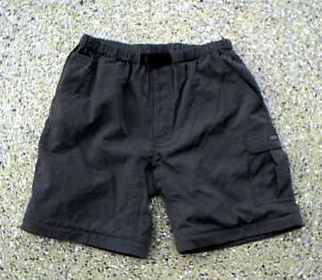

私のお気に入り
釣りの衣類 コーデュラ・ナイロン 100% のショーツ
夏になり、ウェーディングシューズ＋化繊でできたタイツ＋ショーツという「キウィスタイル」で釣りをするようになった。ところが、これまで使っていたショーツは綿100%でできており、水切れが悪く乾燥も遅いので、いつまでもグジュグジュとあまり気持ちよくない履き心地であった。
そこで、オークランドのアウトドア用品屋のバーゲンを覗いたついでに、コーデュラ・ナイロンという素材でできたショーツ（ジップ・オフ・スラックス）を新調した。
写真は、KATHMANDU というメーカーの製品であるが、ポケットの配置、寸法、縫製、色合いなど、良くできていて、釣りにおける履き心地も申し分ない。ずぶずぶに濡れても、少し日向を歩けばもう乾いてしまう。同じようなショーツでも、素材の違いでこれほど差が出るとは驚きであった。

ショーツのみの製品もあったのだが、ファスナーでズボン部分が取り外しが利くので、一枚二役という機能性と、定価の半額で約3,500円という価格に納得して買ってみた。
ニュージーランドに来てから、衣類を新調したことがめったにないのだが、これはよい買い物であった。
話は変わるが、最近では、衣料品はもちろんのこと、ネギ・椎茸などの食料品、ハードディスクやDVDプレーヤーなどの電子機器に至るまで、中国で作られている品物がとても多い。中国ばかりでなく、台湾、韓国、マレーシア、シンガポール、タイ、など、日本以外のアジア諸国で作られた製品が、ニュージーランドの各種お店の陳列棚を、ほとんど席巻している状態である。
人件費や土地の価格、電力などが圧倒的に安いのであるからして、製品の企画、意匠、デザイン、製造工程の管理さえきちんとすれば、どこの国のブランドでも、作るのは中国、あるいは他のアジア諸国ということになるのだろう。
釣りの衣類では定評のある columnbia の製品も、私がこれまで使っていたショーツで言えば、ラベルこそ Portland, Oregon などと謳ってはあるが、案の定、スリランカ製なのである。
日本のものづくりはまだまだ大丈夫！ などという声も聞かれるが、果たして本当に大丈夫なのだろうか？
製造工程の管理は別として、国際的に通用する製品の発想、企画、意匠、デザイン、などという分野は、これまでの日本の教育システムによってきっちりとコントロールされて育ってきた人々が、一番苦手とするものではないだろうか？ 仮に、こうした分野を強くする教育システムができたとしても、これらの分野では、少人数のエキスパートがいれば、それで十分なので、これまで製造業に従事してきた人々がすべて発想、企画、意匠、デザイン業務に就くことは不可能なのである。
最近、自動車メーカーのホンダが、アジアの国で生産された乗用車を日本に輸入することにした、というニュースを読んだ。
20年後に、日本国内で生産されている工業製品はあるのだろうか？
日本の将来は、果たして？
私のお気に入り 目次へ
サイトマップ
ホームへ
お問い合わせ